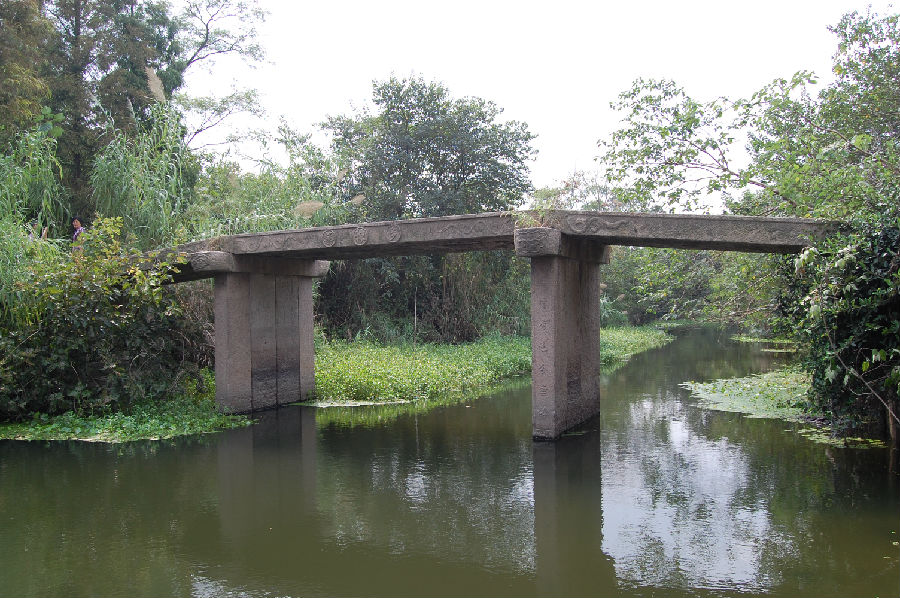

嘉兴市文物保护网 · 市级文物保护点 · 2020-11-03 · 原文

多嫁桥位于嘉兴市秀州区新塍镇观音桥村3组与南洋村16组交界处。始建年代不详，据其形制和当地村民介绍，综合推断为清时重建。东西跨多稼桥港，系三孔无栏梁式石板桥，桥全长14米，桥宽2.14米，桥面和桥柱均由4块石板组成，桥底距水面2.48米，桥额刻“多稼桥”，有桥联（因水深无法辨识），桥身刻有蟠螭纹、莲纹。东西落坡无存，直接与两岸道路相接。此桥曾处在重要的水上交通要道上，是当地重要的历史建筑，做工考究，保存较好，具有较高的历史价值。2010年公布为嘉兴市文物保护点。